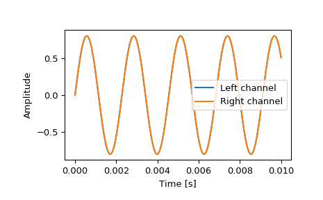

scipy.io.wavfile.read¶
-
scipy.io.wavfile.read(filename, mmap=False)[source]¶ Open a WAV file
Return the sample rate (in samples/sec) and data from a WAV file.
- Parameters
- filenamestring or open file handle
Input wav file.
- mmapbool, optional
Whether to read data as memory-mapped. Only to be used on real files (Default: False).
New in version 0.12.0.
- Returns
- rateint
Sample rate of wav file.
- datanumpy array
Data read from wav file. Data-type is determined from the file; see Notes.
Notes
This function cannot read wav files with 24-bit data.
Common data types: [1]
WAV format
Min
Max
NumPy dtype
32-bit floating-point
-1.0
+1.0
float32
32-bit PCM
-2147483648
+2147483647
int32
16-bit PCM
-32768
+32767
int16
8-bit PCM
0
255
uint8
Note that 8-bit PCM is unsigned.
References
- 1
IBM Corporation and Microsoft Corporation, “Multimedia Programming Interface and Data Specifications 1.0”, section “Data Format of the Samples”, August 1991 http://www.tactilemedia.com/info/MCI_Control_Info.html
Examples
>>> from os.path import dirname, join as pjoin >>> import scipy.io as sio
Get the filename for an example .wav file from the tests/data directory.
>>> data_dir = pjoin(dirname(sio.__file__), 'tests', 'data') >>> wav_fname = pjoin(data_dir, 'test-44100Hz-2ch-32bit-float-be.wav')
Load the .wav file contents.
>>> samplerate, data = sio.wavfile.read(wav_fname) >>> print(f"number of channels = {data.shape[1]}") number of channels = 2 >>> length = data.shape[0] / samplerate >>> print(f"length = {length}s") length = 0.01s
Plot the waveform.
>>> import matplotlib.pyplot as plt >>> import numpy as np >>> time = np.linspace(0., length, data.shape[0]) >>> plt.plot(time, data[:, 0], label="Left channel") >>> plt.plot(time, data[:, 1], label="Right channel") >>> plt.legend() >>> plt.xlabel("Time [s]") >>> plt.ylabel("Amplitude") >>> plt.show()
